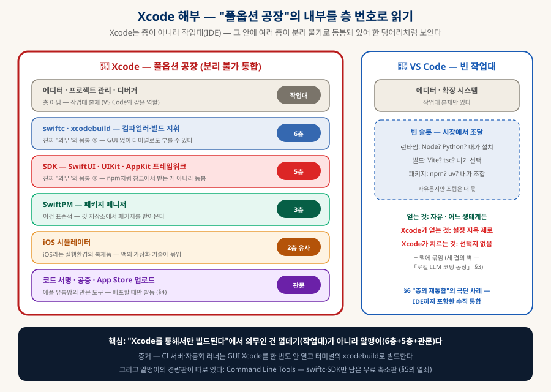
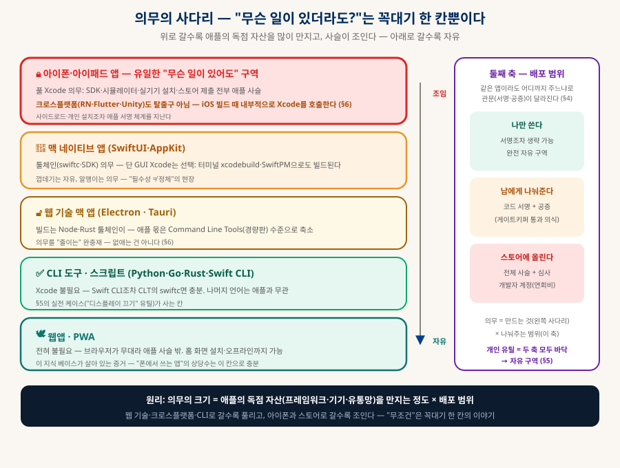
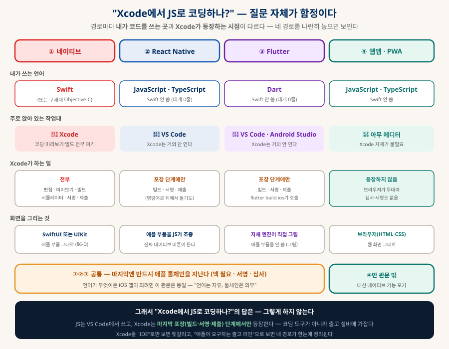
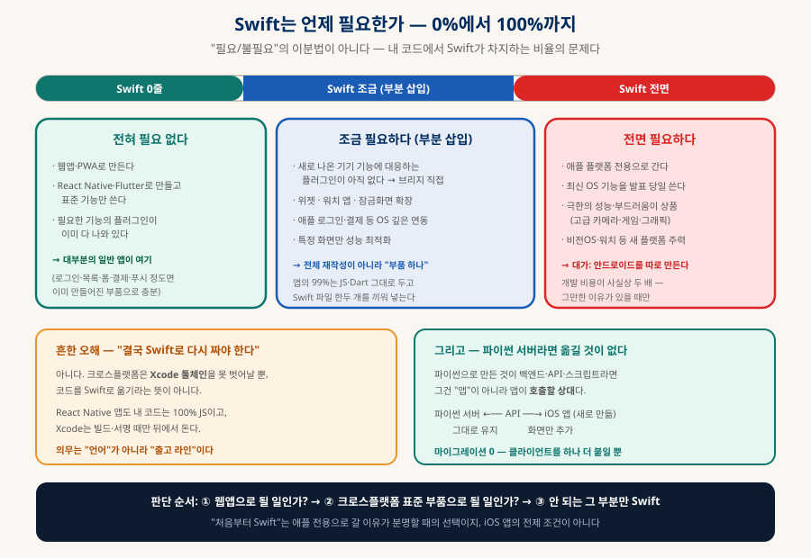
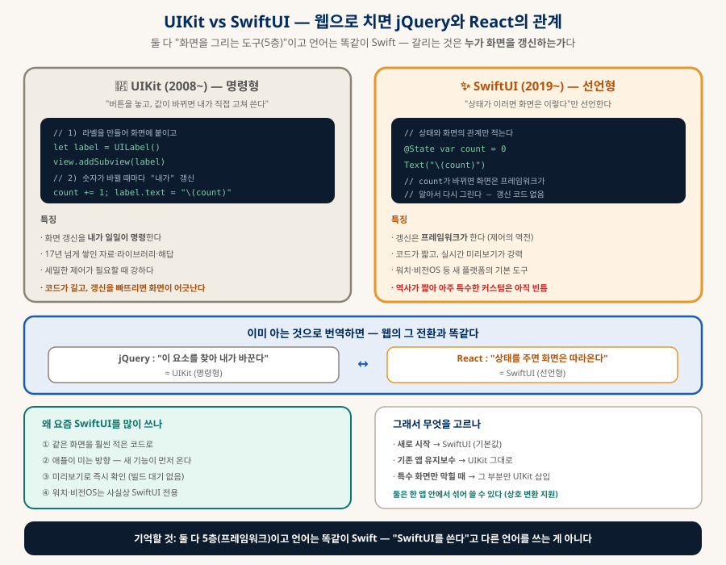
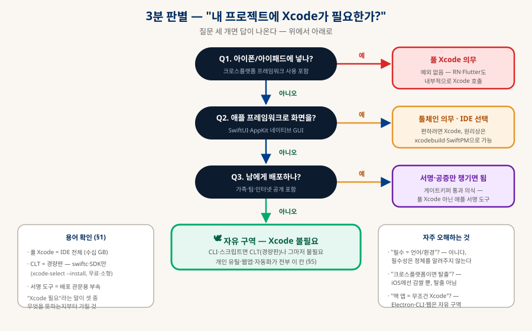

애플 앱 개발의 지도
Xcode와 의무의 사다리 — "무조건"은 꼭대기 한 칸뿐이다
"맥 앱은 Xcode로만 만들 수 있다던데?" — 이 문장에는 오해 세 개가 겹쳐 있다. Xcode는 언어도 환경도 아닌 작업대(IDE)고, 의무의 실체는 그 안의 애플 툴체인이며, 그 의무조차 "무엇을 만들어 어디까지 나눠주느냐"에 따라 조였다 풀린다. Xcode 해부부터 개인 유틸 실전까지 — 애플 생태계에서 개발할 때의 지도 한 장.
0. 한눈에 보기 — 결론 세 줄
이 문서 전체가 이 세 문장의 전개다
① Xcode는 작업대다
언어(그건 Swift)도 실행환경도 아닌 IDE — 터미널 창구의 GUI 진화형. 다만 그 안에 여러 층(빌드·SDK·시뮬레이터·서명)이 분리 불가로 동봉된 "풀옵션 공장"이라 한 덩어리처럼 보인다(§1).
② 의무의 실체는 툴체인
"Xcode로만 빌드된다"에서 의무인 건 껍데기(IDE)가 아니라 알맹이(swiftc·SDK·서명 체계)다 — GUI 없이 터미널의 xcodebuild로 빌드하는 CI들이 그 증거(§2).
③ 의무는 사다리다
의무의 크기 = 애플 독점 자산을 만지는 정도 × 배포 범위. "무슨 일이 있어도"는 아이폰 앱 한 칸뿐이고, 개인용 맥 유틸은 자유 구역이다(§3~5).
익숙한 것에서 출발 ① — 윈도우 프로그램 ↔ 맥 앱
윈도우나 안드로이드 개발을 해봤다면, 애플 생태계는 새로 배우는 것이 아니라 이름을 갈아 끼우는 것에 가깝다. 개발 과정 순서대로 1:1로 놓아 보면 대부분 자리가 맞는다 — 그리고 자리가 안 맞는 몇 칸이 진짜 배울 것이다.
| 과정 | 🪟 Windows (익숙한 쪽) | 🍎 macOS (대응) | 다른 점 · 주의 |
|---|---|---|---|
| 개발 언어 | C# (또는 C++) | Swift (구세대: Objective-C) | 둘 다 정적 타입 컴파일 언어 — C#을 아는 사람에게 Swift는 낯설지 않다 |
| IDE | Visual Studio | Xcode | 역할은 같지만 Xcode는 툴체인이 분리 불가로 동봉된 "풀옵션 공장" (§1) |
| UI — 현세대 | WinUI 3 · WPF | SwiftUI | 둘 다 선언형으로 이동 중 — XAML 감각이 SwiftUI에 그대로 통한다 |
| UI — 구세대 | WinForms · Win32 | AppKit (Cocoa) | 레거시 유지보수에서 만난다 (§6-C의 UIKit과 같은 위치) |
| 화면 정의 방식 | XAML 마크업 + 코드비하인드 | SwiftUI 코드 (구세대: xib·Storyboard) | SwiftUI는 마크업 없이 Swift 코드로만 화면을 쓴다 |
| 패키지 매니저 | NuGet | SwiftPM | 애플엔 중앙 창고가 없다 — 깃 주소로 직거래(「개발 생태계 해부」 §3) |
| 시스템 API | Win32 API · COM | Cocoa · Foundation | 자동화는 COM ↔ Apple Events·AppleScript (「Windows COM과 맥 자동화」) |
| 설정 저장 | 레지스트리 · AppData | UserDefaults · ~/Library | 맥엔 레지스트리 같은 중앙 저장소가 없다 — plist 파일 단위 |
| 빌드 산출물 | .exe + DLL | .app 번들 | .app은 파일이 아니라 폴더다 — 실행 파일·리소스를 담은 디렉토리를 OS가 앱처럼 보여줄 뿐 |
| 설치 패키지 | .msi · .msix · 설치 마법사 | .dmg · .pkg | 맥은 대개 "드래그해서 Applications에 넣기" — 설치 마법사 문화가 아니다 |
| 코드 서명 | Authenticode 인증서 | Developer ID 서명 + 공증 | 공증(notarization)이 윈도우엔 없는 추가 단계 — 애플 서버에 올려 검사받는다 (§4) |
| OS의 문지기 | SmartScreen 경고 | Gatekeeper 차단 | 성격이 다르다 — SmartScreen은 "경고 후 진행 가능", Gatekeeper는 미서명 앱을 기본 차단 |
| 스토어 밖 배포 | 웹에서 exe 배포 자유 | dmg 배포 가능 (단 서명·공증 필요) | 맥도 스토어 밖 배포가 자유롭다 — iOS와 결정적으로 다른 점 |
| 스토어 | Microsoft Store (선택) | Mac App Store (선택) | 양쪽 다 필수가 아니다 — 스토어에 넣으면 샌드박스 제약이 붙는 것도 비슷 |
| 개발 OS 요구 | 어디서나 (윈도우 권장) | 맥 필수 | 가장 큰 진입 장벽 — 「로컬 LLM 코딩 공장」 §3의 "세 겹의 벽" |
| 비용 | 무료 (VS Community) | Xcode 무료 · 배포 시 개발자 계정 유료 | 맥은 배포 단계에서 연회비가 발생 (개략 — §4) |
익숙한 것에서 출발 ② — 안드로이드 ↔ iOS
모바일 쪽은 대응이 더 깔끔하다 — 두 플랫폼이 같은 문제를 각자 풀어온 결과라 거의 모든 개념에 짝이 있다:
| 과정 | 🤖 Android (익숙한 쪽) | 🍎 iOS (대응) | 다른 점 · 주의 |
|---|---|---|---|
| 개발 언어 | Kotlin (구: Java) | Swift (구: Objective-C) | 둘 다 "구세대 언어의 현대적 후계자" — 등장 배경까지 평행하다 |
| IDE | Android Studio | Xcode | Android Studio는 어느 OS에서나, Xcode는 맥에서만 |
| UI — 현세대 | Jetpack Compose | SwiftUI | 둘 다 선언형 — Compose를 알면 SwiftUI는 문법만 다른 같은 개념 |
| UI — 구세대 | XML 레이아웃 + View | UIKit (+ Storyboard) | §6-C 참조 — 명령형 시절의 도구들 |
| 화면 단위 | Activity · Fragment | ViewController · View | iOS엔 Activity 같은 "시스템이 관리하는 진입 단위" 개념이 약하다 |
| 생명주기 | onCreate · onResume · onPause | viewDidLoad · viewWillAppear | 이름만 다르고 개념은 동일 — 화면이 뜨고 지는 시점에 끼어드는 훅 |
| 앱 설정 파일 | AndroidManifest.xml | Info.plist | 권한·앱 정보·진입점을 선언하는 자리 — 정확히 같은 역할 |
| 권한 | 매니페스트 선언 + 런타임 요청 | plist에 용도 문구 + 런타임 요청 | iOS는 "왜 필요한지" 문구가 필수이고 없으면 앱이 죽는다 (「앱 출시의 관문」 §2-1) |
| 빌드 시스템 | Gradle | Xcode Build System | Gradle 같은 범용 빌드 스크립트 문화가 약하다 — 대부분 Xcode 설정 UI |
| 패키지 매니저 | Gradle + Maven 저장소 | SwiftPM (구세대: CocoaPods) | 중앙 저장소 유무의 차이 (위 표와 동일) |
| 산출물 | .aab (구: .apk) | .ipa | — |
| 서명 | 업로드 키 + Play App Signing | 인증서 + 프로비저닝 프로파일 | iOS는 "어느 기기에 설치 가능한가"까지 서명에 묶인다 — 개념이 하나 더 많다 |
| 테스트 배포 | 내부·비공개·공개 트랙 | TestFlight | TestFlight는 외부 테스터용 빌드도 심사를 거친다 |
| 시뮬레이터 | Android Emulator | iOS Simulator | iOS 시뮬레이터가 훨씬 가볍고 빠르다 (실제 ARM 코드를 맥에서 그대로 돌리므로) |
| 스토어·심사 | Google Play — 자동화 중심, 빠름 | App Store — 사람 심사, 깐깐 | 「앱 출시의 관문」 §6의 "세관 vs 대사관" 비유 |
| 등록비 | 1회성 (개략) | 연회비 (개략) | iOS는 매년 갱신 — 끊기면 앱이 스토어에서 내려간다 |
| 개발 OS | Windows · Mac · Linux 자유 | 맥 필수 | 안드로이드 개발자가 iOS로 확장할 때 만나는 첫 벽 |
① 공증(notarization) — 윈도우엔 없는 단계. 서명만으로 끝나지 않고 애플 서버의 검사를 통과해야 한다.
② 프로비저닝 프로파일 — 안드로이드의 서명보다 개념이 하나 더 많다("어느 기기·어느 용도로 설치 가능한가").
③ 사이드로드의 부재 — 안드로이드는 APK를 그냥 나눠줄 수 있지만, iOS는 사실상 불가능하다(§3의 "무슨 일이 있어도" 구역).
④ 시스템 뒤로가기 없음 — 안드로이드의 백 버튼에 해당하는 것이 iOS엔 없어서, 화면 이동 설계 자체가 달라진다.
⑤ 맥 필수 — 윈도우·안드로이드에는 없는 하드웨어 전제.
반대로 맥 데스크톱 앱은 iOS보다 윈도우에 가깝다 — 스토어 밖 배포가 자유롭다는 점에서(§3 사다리의 둘째 칸).
1. Xcode의 정체 — 풀옵션 공장 해부
"필수라길래 언어인 줄 알았다"에서 시작하는 오해 풀기
흔한 오해의 경로는 이렇다: "맥에서는 Xcode를 통해서만 앱이 빌드된다" → "그럼 Xcode가 개발언어거나 개발환경이겠네." 합리적인 추론이지만 전제가 틀렸다 — 개발언어는 Swift(1층)이고, Xcode는 그 언어로 일하는 작업대(IDE)다. IDE(Integrated Development Environment)는 6층 명함(「개발 생태계 해부」 §2) 어디에도 속하지 않는 별도 범주로, 터미널(창구)의 GUI 진화형이다. 그런데 왜 한 덩어리 "환경"처럼 느껴지는가 — 해부해 보면 답이 나온다:

| Xcode 안의 부품 | 몇 층인가 | 비고 |
|---|---|---|
| 에디터·프로젝트 관리·디버거 | 층 아님 — 작업대 | VS Code와 같은 역할의 본체 |
| swiftc · xcodebuild | 6층 (빌드) | 의무의 몸통 ① — 터미널로도 부를 수 있다 |
| SDK — SwiftUI·UIKit·AppKit | 5층 (프레임워크) | 의무의 몸통 ② — 창고에서 받는 게 아니라 동봉 |
| SwiftPM | 3층 (패키지 매니저) | 이건 표준적 — 깃 저장소 직결 |
| iOS 시뮬레이터 | 2층 유사 (실행환경) | iOS의 복제품 — 맥 가상화에 묶임 |
| 서명·공증·스토어 업로드 | 층 밖 — 유통 관문 | 배포할 때만 발동(§4) |
2. 필수성 ≠ 정체 — "없으면 안 된다"는 층을 알려주지 않는다
이 문서에서 하나만 가져간다면 이 원리다
"이게 없으면 개발이 안 된다"는 사실에서 "그러니 이게 언어/환경이겠구나"로 건너뛰는 것이 오해의 공식이었다. 그러나 필수성은 정체가 아니라 "생태계가 얼마나 수직 통합됐는지"를 알려주는 신호일 뿐이다 — JS 개발에 Node가 사실상 필수라고 Node가 언어인 게 아니듯, iOS 개발에 Xcode가 필수라고 Xcode가 언어인 게 아니다. 정체 판별은 언제나 "이건 몇 층이지?"로 돌아간다.
그리고 결정적 증거 — "Xcode를 통해서만 빌드된다"는 문장조차 정확히는 틀렸다. 의무인 건 Xcode라는 앱이 아니라 그 안의 툴체인이라서, GUI를 한 번도 안 열고 빌드하는 길이 늘 있다:
# 풀 Xcode의 알맹이만 터미널에서 호출 xcodebuild -project MyApp.xcodeproj -scheme MyApp build test # 더 가볍게 — Command Line Tools(경량판)의 swiftc로 직접 xcode-select --install ← 풀 Xcode 없이 컴파일러+SDK만 (무료·소형) swiftc main.swift -o mytool ← CLI 도구는 이걸로 끝 # 「로컬 LLM 코딩 공장」의 Xcode 러너가 정확히 이 방식이었다 — # 에이전트가 GUI 없이 호스트의 xcodebuild만 화이트리스트로 호출
3. 의무의 사다리 — "무슨 일이 있더라도?"의 진짜 답
무엇을 만드느냐에 따라 사슬이 조였다 풀린다

| 만드는 것 | Xcode(애플 사슬) 의무? | 내용 |
|---|---|---|
| 아이폰·아이패드 앱 | ✅ 무슨 일이 있어도 | 유일한 예외 없는 구역 — SDK·시뮬레이터·실기기 설치·스토어 제출 전부 애플 사슬. 크로스플랫폼도 탈출구 아님(§6) |
| 맥 네이티브 앱 (SwiftUI·AppKit) | ✅ 사실상 — 툴체인 의무 | 단 GUI Xcode는 선택: xcodebuild·SwiftPM으로도 빌드된다 — 껍데기 자유, 알맹이 의무 |
| 웹 기술 맥 앱 (Electron·Tauri) | 🔶 CLT 수준으로 축소 | 빌드는 Node·Rust 툴체인이 — 애플 몫은 경량판 컴파일러 정도 |
| CLI 도구·스크립트 | ❌ 불필요 | Swift CLI조차 CLT면 충분, Python·Go·Rust는 애플과 무관 — §5의 실전 칸 |
| 웹앱·PWA | ❌ 전혀 | 브라우저가 무대 — 이 지식 베이스가 살아 있는 증거. "폰에서 쓰는 앱"의 상당수가 이 칸으로 충분 |
4. 배포의 관문 — 서명·공증·스토어
의무의 둘째 축: 같은 앱도 "어디까지 나눠주느냐"로 관문이 달라진다
| 나눠주는 범위 | 치러야 하는 의식 | 실제 의미 |
|---|---|---|
| 나만 쓴다 | 없음 — 서명조차 생략 가능 | 내 맥에서 내가 빌드해 내가 쓰는 물건은 완전 자유 구역. 개인 유틸(§5)이 여기 |
| 남에게 나눠준다 | 코드 서명 + 공증(notarization) | 게이트키퍼 통과 의식 — "확인되지 않은 개발자" 경고를 없애는 절차. 풀 Xcode가 아니라 애플 서명 도구면 됨 (개발자 계정 필요) |
| App Store에 올린다 | 전체 사슬 + 심사 | 개발자 계정(연회비, 개략) + 스토어 심사 — 애플 유통망의 정식 관문 |
그래서 최종 공식이 완성된다 — 의무의 크기 = 애플의 독점 자산을 만지는 정도(§3 사다리) × 나눠주는 범위(이 표). 두 축 모두 바닥인 "개인용 맥 유틸"이 가장 자유롭고, 두 축 모두 꼭대기인 "스토어에 올리는 아이폰 앱"이 가장 조인다. 다음 절에서 그 자유 구역을 실제로 걸어본다.
5. 실전 — "내장 디스플레이 끄기" 개인 유틸 만들기
구체 사례 하나로 사다리 바닥 칸의 자유를 확인한다
과제: 맥북에서 쓸 "내장 디스플레이 끄기" 유틸을 직접 만든다 — Xcode를 무조건 써야 하나? 답: 안 써도 된다. 개인용 맥 유틸은 사다리(§3)와 관문(§4) 두 축 모두 바닥이라, 경로가 셋이나 열려 있다:
| 경로 | 필요한 것 | 만드는 모습 |
|---|---|---|
| ① 스크립트로 (최경량) | 아무것도 — 컴파일 없음 | Hammerspoon(맥 자동화 앱, Lua)이나 Python+pyobjc로 디스플레이 제어 → 단축키에 연결 |
| ② Swift CLI로 | CLT만 — 풀 Xcode 불필요 | swiftc off.swift -o off — CLT에 swiftc와 macOS SDK가 들어 있어 CoreGraphics·AppKit 링크 가능 |
| ③ 메뉴바 상주 앱으로 | CLT + SwiftPM | SwiftPM으로 빌드 → .app 번들은 폴더 구조+Info.plist 수작업 — 가능하지만 손이 좀 간다 |
세 경로 모두 서명·공증 불필요 — §4의 "나만 쓴다" 행 그대로다. Xcode가 다시 필요해지는 순간은 셋뿐이다: SwiftUI로 화면 있는 앱을 편하게 만들고 싶을 때(의무가 아니라 편의), 남에게 나눠줄 때(서명 도구), 스토어에 올릴 때(진짜 의무).
6. 언어와 프레임워크 — 무엇으로 쓰고, 언제 Swift가 필요한가
가장 헷갈리는 매듭 세 개를 순서대로 푼다
애플 개발을 처음 들여다보면 이름들이 한꺼번에 쏟아진다 — Xcode·Swift·SwiftUI·UIKit·React Native. 그리고 자연스럽게 세 가지 질문이 생긴다: "Xcode에서 JS로 코딩해도 되나?" "그럼 Swift는 언제 필요한 거지?" "SwiftUI랑 UIKit은 뭐가 다른데 다들 SwiftUI를 쓰지?" 세 질문을 순서대로 푼다.
AXcode에선 무슨 언어를 쓰나 — 질문 자체가 함정이다
먼저 결론 — "Xcode에서 JS로 코딩한다"는 상황은 거의 없다. 그렇다고 Swift가 강제되는 것도 아니다. 답이 이상하게 들리는 이유는 질문의 전제가 틀렸기 때문이다: 경로에 따라 내가 코드를 쓰는 곳과 Xcode가 등장하는 시점이 아예 다르다.

그래서 크로스플랫폼 도구들의 정확한 위치도 정리된다 — 이들은 애플 사슬을 없애는 것이 아니라 감싸거나 줄이는 완충재다:
| 도구 | 애플 사슬과의 관계 | 실제로 벌어지는 일 |
|---|---|---|
| React Native · Flutter · Unity | 감싼다 (iOS에선 탈출 아님) | 코드는 JS·Dart·C#로 쓰지만, iOS 빌드 단계에서 내부적으로 Xcode 툴체인을 호출한다 — 대체가 아니라 포장 |
| Electron · Tauri (맥 앱) | 줄인다 | 빌드 주체가 Node·Rust 툴체인으로 넘어가고 애플 몫은 CLT 수준으로 축소 — 의무를 없애진 못해도 크게 완화 |
| 웹앱 · PWA | 벗어난다 | 무대가 브라우저라 애플 사슬 밖 — 단 "네이티브 기능(위젯·백그라운드 등)"은 포기하는 거래 |
한 줄 정리 — 사슬을 없애는 건 "iOS를 표적에서 빼는 것"뿐이다. iOS를 표적에 두는 한 크로스플랫폼은 Xcode를 감싸는 완충재이고(설치·관리는 여전히 필요), 맥만 표적이면 웹 기술로 의무를 CLT 수준까지 줄일 수 있으며, 웹으로 가면 완전히 벗어난다. 「기술 스택 고르기」 §1의 저울("무엇을 얻고 무엇을 내주나")이 여기서도 그대로 작동한다.
B언제 Swift가 필요한가 — 0%에서 100%까지
"Swift가 필요한가"는 예/아니오 문제가 아니라 내 코드에서 Swift가 차지하는 비율의 문제다. 대부분의 일반 앱은 0%로 끝나고, 필요해지더라도 전체 재작성이 아니라 부품 하나를 끼워 넣는 형태다:

| Swift 비중 | 해당하는 경우 | 실무 감각 |
|---|---|---|
| 0줄 | 웹앱·PWA / 크로스플랫폼 + 표준 기능(로그인·목록·폼·결제·푸시) — 필요한 플러그인이 이미 다 있다 | 대부분의 일반 앱이 여기서 끝난다 |
| 조금 (부분 삽입) | 새 기기 기능의 플러그인이 아직 없어 브리지를 직접 / 위젯·워치 앱·잠금화면 확장 / OS 깊은 연동 / 특정 화면 성능 최적화 | 앱의 99%는 JS·Dart 그대로 두고 Swift 파일 한두 개를 끼운다 |
| 전면 | 애플 전용으로 간다 / 최신 OS 기능을 발표 당일 쓴다 / 극한의 성능이 상품(카메라·게임) / 비전OS·워치 주력 | 대가는 안드로이드를 따로 만드는 것 — 비용이 사실상 두 배 |
CSwiftUI vs UIKit — 왜 다들 SwiftUI를 쓰나
여기서 먼저 정리할 것 — 둘 다 "화면을 그리는 도구(5층 프레임워크)"이고, 언어는 똑같이 Swift다. "SwiftUI를 쓴다"고 다른 언어를 쓰는 게 아니다(「개발 생태계 해부」의 층 구분 — 언어와 프레임워크는 다른 서랍). 갈리는 것은 단 하나, 누가 화면을 갱신하는가다:

| UIKit (2008~) | SwiftUI (2019~) | |
|---|---|---|
| 방식 | 명령형 — "이 라벨의 글자를 바꿔라"를 내가 지시 | 선언형 — "상태가 이러면 화면은 이렇다"만 선언 |
| 화면 갱신 | 내가 일일이 — 빠뜨리면 화면이 데이터와 어긋난다 | 프레임워크가 자동 — 제어의 역전(「기술 스택 고르기」 §5-A) |
| 웹으로 치면 | jQuery | React |
| 코드 양 | 길다 | 같은 화면을 훨씬 짧게 |
| 성숙도 | 17년치 자료·라이브러리·해답이 쌓여 있다 | 역사가 짧아 아주 특수한 커스텀엔 아직 빈틈 |
| 애플의 방향 | 유지는 하되 새 기능의 우선순위가 아니다 | 미는 쪽 — 워치·비전OS는 사실상 SwiftUI 전용 |
선택 기준: 새로 시작하면 SwiftUI가 기본값, 기존 앱 유지보수면 UIKit 그대로, 특수 화면에서 막히면 그 부분만 UIKit을 끼워 넣는다 — 둘은 한 앱 안에서 섞어 쓸 수 있다.
7. 3분 판별 — "내 프로젝트에 Xcode가 필요한가?"
질문 세 개면 답이 나온다

Q1. 아이폰/아이패드에 넣나?
예 → 풀 Xcode 의무, 예외 없음(크로스플랫폼 포함). 아니오 → 다음 질문으로.
Q2. 애플 프레임워크로 화면을?
SwiftUI·UIKit·AppKit GUI면 → 툴체인 의무·IDE는 선택(편의). 아니오 → 다음 질문으로. (둘의 차이는 §6-C)
Q3. 남에게 배포하나?
예 → 서명·공증만 챙기면 됨. 아니오 → 자유 구역 — CLT나 그마저 불필요.
8. 함께 읽기
이 문서에서 갈라지는 길들
| 주제 | 문서 |
|---|---|
| 6층 명함·IDE라는 범주의 원론 | 「개발 생태계 해부」 §2·§7 — 이 문서의 모(母) 지도 |
| Xcode가 컨테이너에 못 들어가는 이유 | 「로컬 LLM 코딩 공장」 §3 — 세 겹의 벽·호스트 러너 |
| 맥 자동화의 다른 길 (앱 만들지 않고) | 「Windows COM과 맥 자동화」 — Apple Events·접근성 |
| "폰에서 쓰는 앱"을 웹으로 — PWA의 실제 | 이 지식 베이스 자체 + 「상주형 AI 에이전트」의 모바일 경로 |
| 무엇을 얻고 내주나 — 선택의 저울 | 「기술 스택 고르기」 §1 |